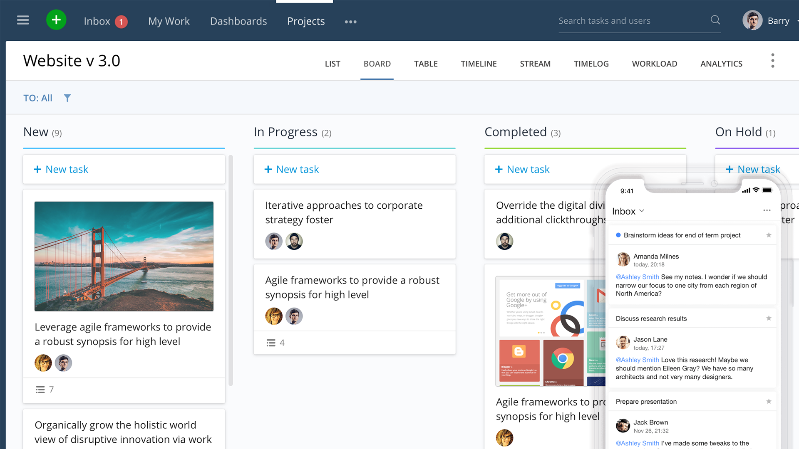
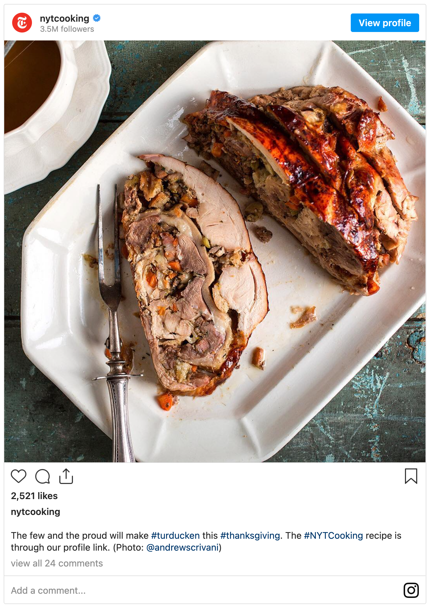
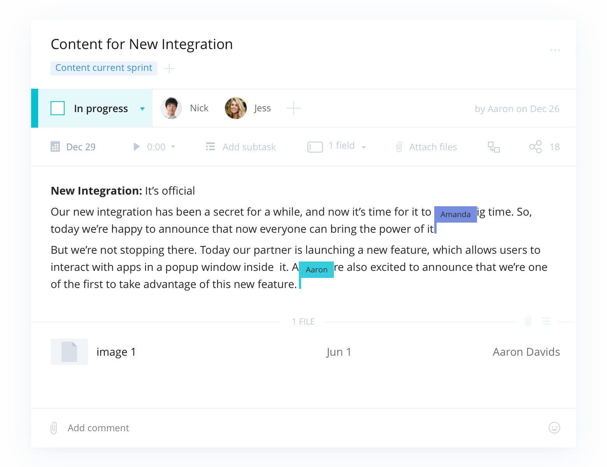
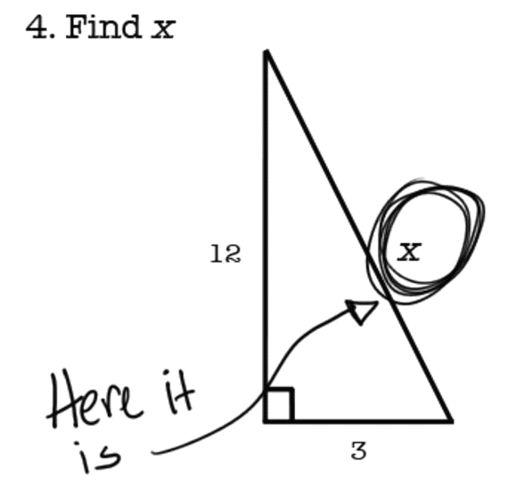

Evgeny Kot

Story about FFFFFFFF


"I am going to Amsterdam"
unstable
unsupportable
unscalable
F
ng experiment

but idea was so simple and bullteproof!
What would you do?
Possum plan
scream
scream
scream
Possum plan
dart observatory
conclusion
In any hopeless situations, just dance away
bunopus_en
wriketechclub


 ng experiment ng experiment
ng experiment ng experiment